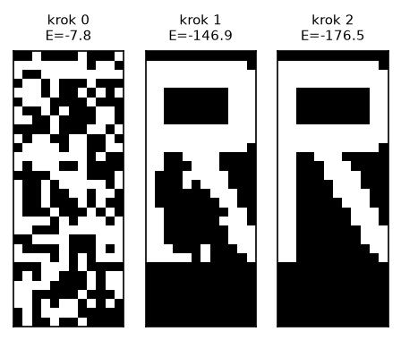
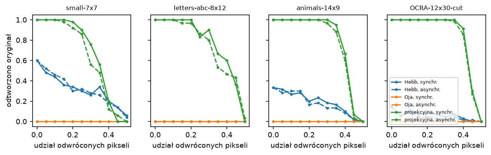
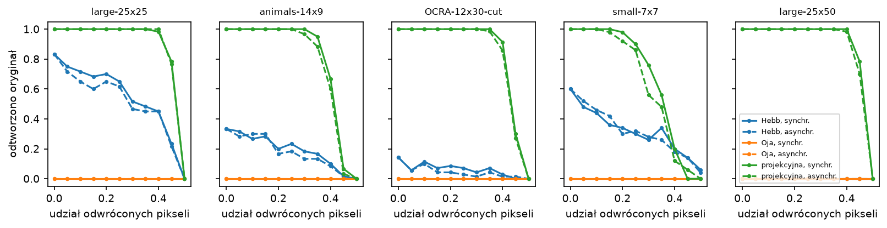
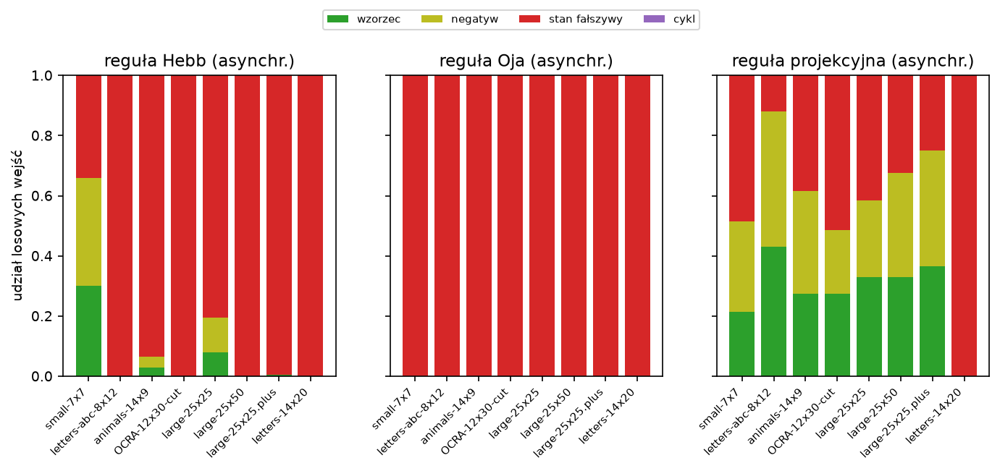
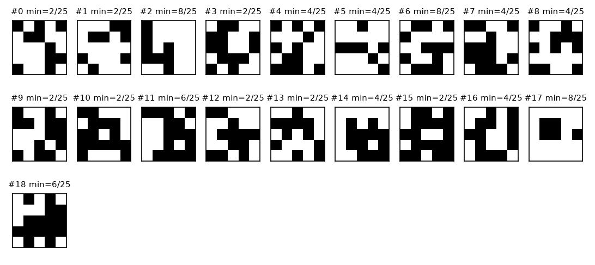
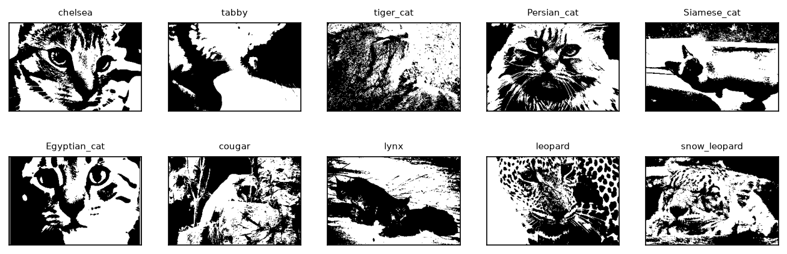
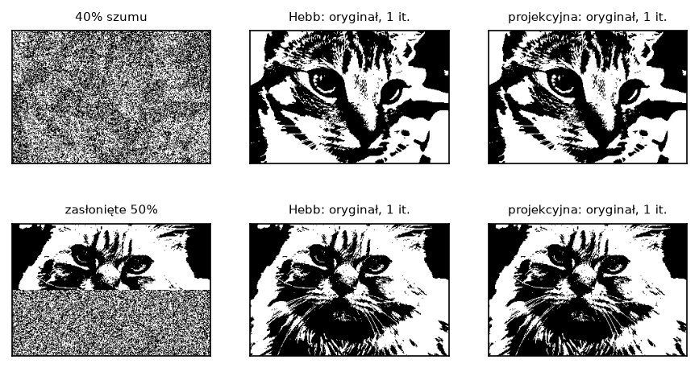

\(N\) neuronów \(s_i\in\{-1,+1\}\) (piksele), wagi symetryczne, \(w_{ii}=0\)
\[ h_i=\sum_j w_{ij}s_j,\qquad s_i\leftarrow\operatorname{sgn}(h_i) \]
\[ E(\mathbf s)=-\tfrac12\,\mathbf s^\top W\mathbf s \]
asynchronicznie: \(\Delta E\le 0\) → zawsze punkt stały
synchronicznie: punkt stały albo cykl długości 2
\[ W=\tfrac1N X^\top X-\tfrac PN I \qquad m_{\mu\nu}=\tfrac1N\,\mathbf x^\mu\!\cdot\mathbf x^\nu \]
\[ \Delta\mathbf w=\eta\,y\,(\mathbf x-y\,\mathbf w),\quad y=\mathbf w^\top\mathbf x \]
\[ W=X^\top(XX^\top)^{+}X,\qquad w_{ii}\leftarrow0 \]
HopfieldBase: dynamika sync/async, wykrywanie punktów stałych i cykli, energia, wizualizacjaHopfield: jawna macierz \(N\times N\), reguły Hebba, Oji, delta, projekcyjnaLowRankHopfield: \(W=A^\top X-\operatorname{diag}(\mathbf d)\),
pamięć \(O(PN)\) zamiast \(O(N^2)\), aktualizacja async \(O(P)\) → koty
\(N=60\,000\)

large-25x25.
Więcej neuronów pomaga tylko wtedy, gdy niosą informację różnicującą wzorce.




wobec \(0{,}138N\approx3{,}5\) dla wzorców losowych — wyżarzanie dobiera przesłuch tak, by nigdzie nie przeważał nad sygnałem
Jeden wzorzec \(\mathbf x\) (litera X), wejście ortogonalne \(\mathbf x\cdot\mathbf s=0\):
\[ \mathbf h=\tfrac1N\mathbf x(\mathbf x\cdot\mathbf s)-\tfrac1N\mathbf s=-\tfrac1N\mathbf s \]
synchronicznie: \(\mathbf s\to-\mathbf s\to\mathbf s\), \(E=0{,}5\) stale
asynchronicznie: pierwsza zmiana psuje ortogonalność → zbieżność


LowRankHopfield